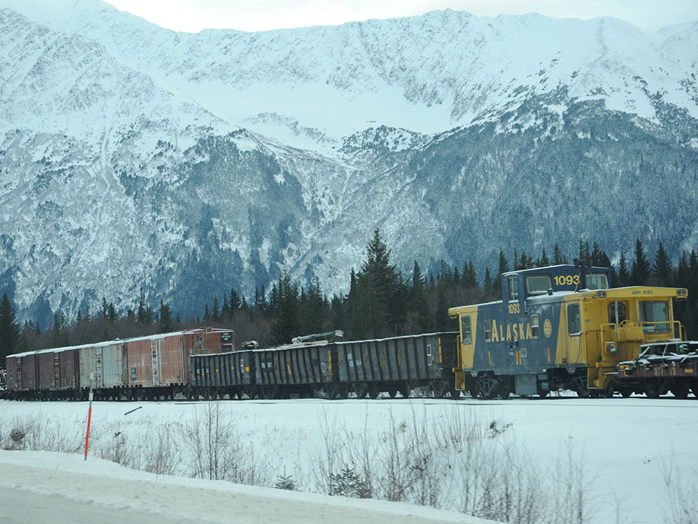

Mountain community surrounded by glaciers, forests, and rugged peaks that serves as a gateway to outdoor adventure, scenic recreation, and year-round alpine experiences.
How to Get There
From Anchorage (40 mi): Take the Seward Highway south along Turnagain Arm for approximately 40 miles, then turn onto Alyeska Highway and continue into the heart of the community.
Overview
Girdwood is a small mountain community in the Chugach Mountains, about 40 miles south of Anchorage on the Seward Highway, and it is the home of Alyeska Resort, Alaska's largest ski resort. It sits in a temperate rainforest valley, with hanging glaciers on the surrounding peaks, and it is known for its heavy snowfall, hiking, and relaxed, outdoorsy atmosphere. The town is also near Turnagain Arm, a long inlet famous for its tidal bore and beluga whales.
Visitors come to Girdwood for skiing at Alyeska, for the Alyeska Aerial Tram, and for hiking on trails such as the Winner Creek Trail with its hand tram. They also come for the Alaska Wildlife Conservation Center, for Portage Glacier, and for the Girdwood Forest Fair each July.
History
The area was used by the Dena'ina people, and gold was found in Crow Creek in 1896, drawing prospectors who established mines. The community was named for James Girdwood, a Pennsylvanian who staked mining claims in the valley. In the 1950s, the first ski lift opened on Mount Alyeska, and the resort was developed in the 1960s. On March 27, 1964, the Good Friday earthquake dropped the land by several feet, flooding the old town site, and the community moved to higher ground. The resort expanded in the 1990s with the Hotel Alyeska and the aerial tram.
Sightseeing and Popular Landmarks
The Alyeska Aerial Tram rises 2,300 feet from the base of the resort to the top of Mount Alyeska, with views of glaciers and Turnagain Arm, and a restaurant at the top. The Winner Creek Gorge Trail leads to a hand tram across a gorge, and the Crow Creek Mine is a historic gold mine with panning. The Alaska Wildlife Conservation Center, near Portage, has rescued animals such as bears, moose, and muskoxen, and Portage Glacier is nearby.
Culture and Museums
The Girdwood Forest Fair in July, a three-day arts and crafts festival, is the main community event, and the Alyeska Resort has concerts and festivals. The Crow Creek Mine shows the area's mining history, and the Girdwood Fire Hall and Girdwood Center host events. The nearby Anchorage and Whittier also offer cultural attractions.
Parks
Girdwood is surrounded by Chugach National Forest and Chugach State Park, with trails such as the Iditarod Trail, the Winner Creek Trail, and Virgin Creek Falls. Turnagain Arm and the Seward Highway offer views of the tidal bore and beluga whales, and Beluga Point and Bird Point are scenic stops. The Alyeska Resort has hiking trails in summer and skiing in winter.
Seasons and Weather
Girdwood has a cool maritime climate with heavy snow. Summers are mild, with highs in the 60s°F, and winters are cold, with highs in the 20s and 30s°F and more than 300 inches of snow in the mountains. Skiing runs from November to April, and summer is the season for hiking and tourism.
This article uses material from Wikipedia as well as information from official tourism and institutional sources. Key references include Girdwood Chamber of Commerce, Alyeska Resort, Alaska Wildlife Conservation Center, Travel Alaska, and National Weather Service Anchorage. Wikipedia material is from the article "Girdwood, Alaska", and is available under the Creative Commons Attribution-Share-Alike License 3.0.

.jpg){kind=link}